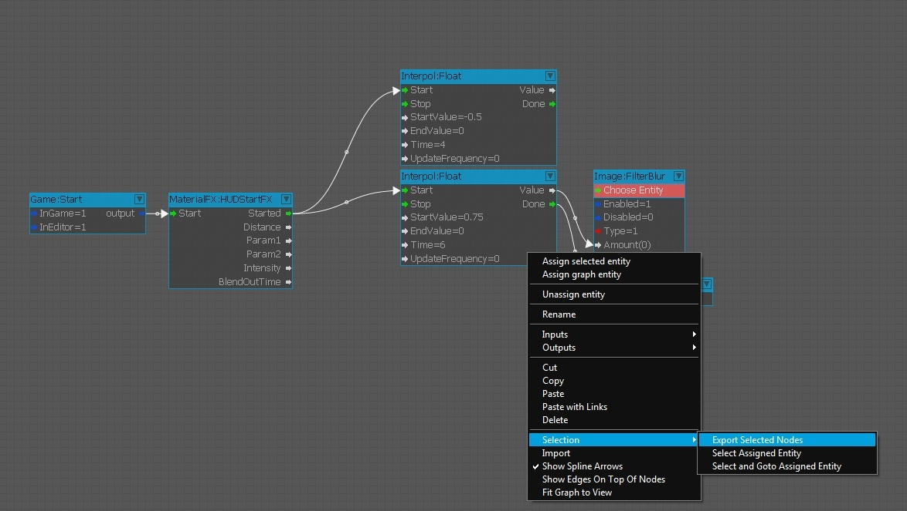
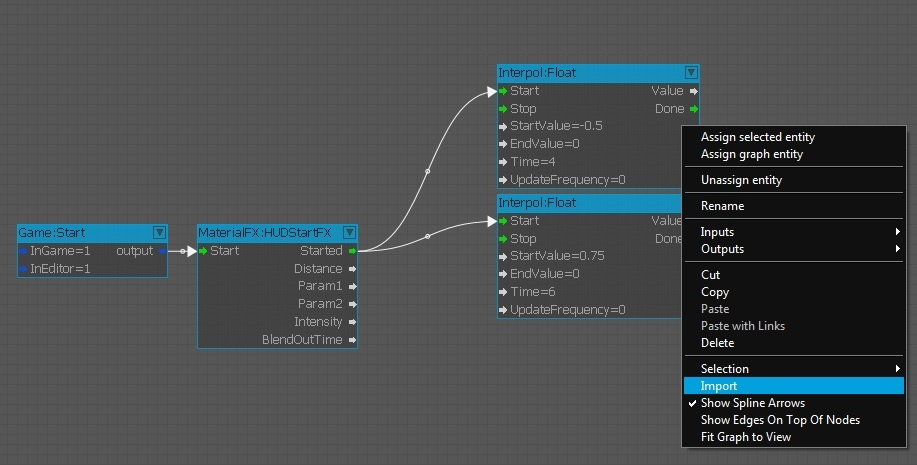

Обзор
Графики можно экспортировать в файл XML для использования на других уровнях. Структуру графа, включая все узлы и связи, можно экспортировать. Однако сущности, на которые ссылаются узлы, не экспортируются. После импорта вам потребуется сбросить целевые объекты.
При импорте графа узлы, не имеющие целевых объектов, отображаются красным цветом. Выберите объект выделить.
Экспорт
Для экспорта графика необходимо выполнить следующие шаги:
- Откройте график и выберите узлы, которые вы хотите экспортировать.
- Щелкните правой кнопкой мыши в любом месте основной панели редактирования, а затем добрался до Выбор -> Экспортировать выбранные узлы.

- Появится новое окно, в котором вам будет предложено указать имя файла для экспортируемого графика.
- Выберите имя и нажмите Сохранить чтобы завершить экспорт графика.
Импорт
Чтобы импортировать ранее экспортированный график в другой график, сначала откройте график, в который вы хотите добавить экспортированный график.
- Откройте контекстное меню с помощью щелчок правой кнопкой мыши главную панель редактирования, а затем выбрав Импорт.
- Выберите XML-файл, содержащий график, и нажмите кнопку OK чтобы завершить импорт графика. Вы также можете щелкните правой кнопкой мыши прямо внутри окна Flow Graph и импортируйте график оттуда:

Импортированный график не будет вставлен в новый график в том месте, где находится указатель мыши; он будет расположен относительно старого графика.